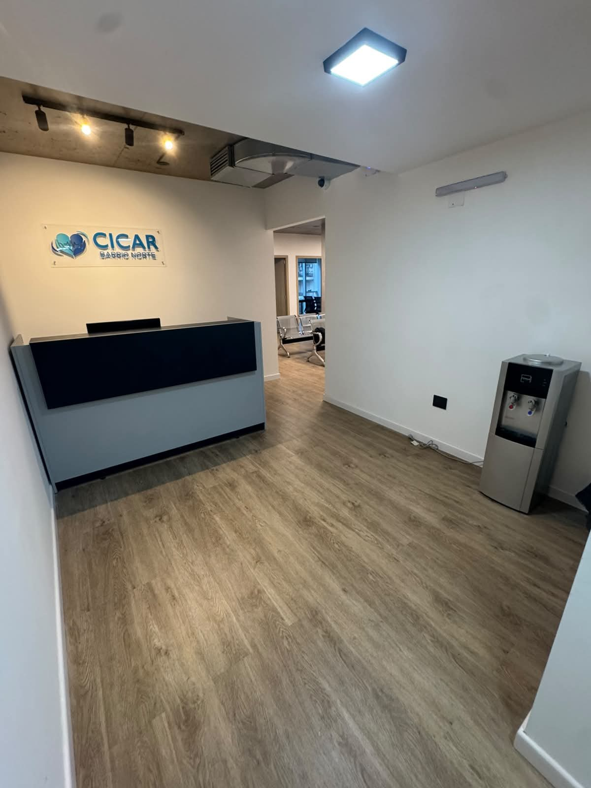
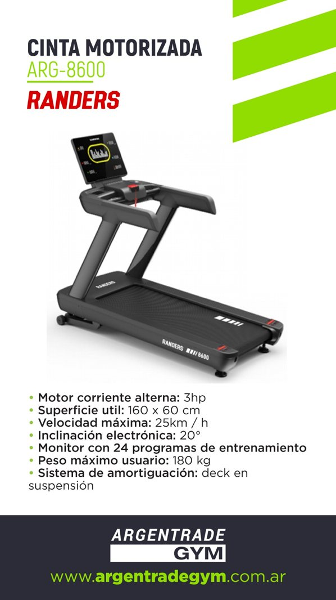
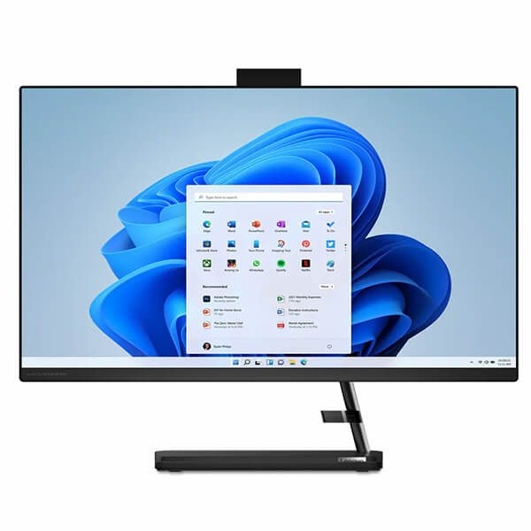

Diagnóstico, tratamiento y seguimiento en un mismo lugar. Tecnología de última generación, atención humana.
CICAR S.A. es un centro médico cardiológico integral ubicado en pleno Barrio Norte. Combinamos un edificio corporativo a estrenar, equipamiento de última generación y un equipo profesional especializado para ofrecer un servicio que está a la altura de las prepagas y obras sociales más exigentes.

Uruguay 783, Piso 3, Oficina 301 — San Nicolás, CABA. Acceso directo por avenidas, hall premium, seguridad las 24 horas.
Atención personalizada con secretaría dedicada, sistema de turnos digital, WhatsApp y videoconsultas. Bienvenida cálida, gestión moderna.

Diseñados para que esperar sea cómodo. Mobiliario contemporáneo, iluminación natural y ambiente sereno. Una experiencia distinta para tus pacientes desde el primer minuto.

Tecnología de última generación, luz natural en cada espacio, diseño limpio. Cada consultorio está pensado para que el profesional trabaje con todo lo que necesita al alcance, y el paciente se sienta tranquilo.


Ecógrafo de última generación con transductores cardiológico, lineal y convexo. Software de ecoestrés-strain con módulo ECG integrado. Todo lo necesario para diagnósticos precisos en un solo lugar.
Cinta ergométrica profesional, software de strain en tiempo real y monitoreo continuo. La combinación necesaria para detectar y cuantificar isquemia con la mejor evidencia disponible.

Historia clínica, recetas, turnos, comunicación: todo digital. Menos fricción para el paciente, mejor trazabilidad para la obra social, más tiempo del profesional dedicado a la atención.

Cardiología en el centro, pero con un entorno de especialidades complementarias que permite resolver al paciente sin derivarlo. Atención integral real.
Eje del centro. Consultorio, estudios y seguimiento.
Evaluación pre y postquirúrgica especializada.
Diagnóstico y procedimientos hemodinámicos.
Atención general y enfoque integral del paciente.
Estudios hematológicos y seguimiento.
Atención del paciente renal cardiovascular.
Salud mental con enfoque cardiocomórbido.
Diabetes y factores de riesgo cardiovascular.
Plan alimentario integrado al tratamiento.
Atención especializada complementaria.
El paciente entra y sale con su diagnóstico. Sin derivaciones, sin esperas, sin trasladar imágenes. Todos los estudios se realizan con el mismo equipamiento médico y profesional.
Trazado completo con interpretación inmediata.
Prueba de esfuerzo en cinta ergométrica.
Evaluación funcional con strain en tiempo real.
Estudio estructural y hemodinámico del corazón.
Arterial y venoso, periférico completo.
Abdominal, pelviana, MSK.
Monitoreo electrocardiográfico ambulatorio.
Monitoreo de presión arterial 24 hs.
Sanitarios accesibles con barras de apoyo, espacios amplios para sillas de ruedas, hall del edificio con ascensores y rampas. Cumplimos con los estándares de accesibilidad que las prepagas y obras sociales exigen para sus afiliados.

CICAR cuenta con convenio activo de Ayuda Médica para protección médica ambulatoria. En caso de cualquier emergencia durante la atención, una unidad llega al centro de inmediato. Tranquilidad para el paciente, garantía para la obra social.

Horarios amplios (L–V 8 a 20, sábados 8 a 13), ubicación céntrica y turnos digitales. Menos tiempo de gestión para el afiliado, mayor adherencia al tratamiento.
Equipamiento Mindray Consona 8, strain, monitoreo continuo y profesionales especializados. Resolución diagnóstica en un solo paso, sin derivaciones externas.
10 especialidades complementarias en el mismo centro: el paciente cardiovascular resuelve nefrología, diabetes, hematología, nutrición y salud mental sin moverse de Uruguay 783.
Estamos disponibles para visitas, demostración del centro y propuesta comercial personalizada.